仿真环境
You can choose language by
环境介绍
该项目的仿真环境基于开源仿真软件 webots 搭建，模拟现实中的开放场景主动视觉跟踪问题。为此，设立了包括城市街道、市中心、湖边、乡村、沙漠、农田6种场景，其中每种场景包含白天、夜晚、雾天、雪天等4种天气，总共24张环境地图。
该项目24个仿真环境示意图：

运行流程
{kind=link}
demo模式
该模式在地图中生成一个跟踪器。可以通过键盘操作跟踪器在地图中飞行，浏览地图。同时该跟踪器默认跟踪其初始位置附近的一辆BmwX5车辆，同时可以通过手动操纵无人机进行跟踪，并实时把reward参数输出在webots的Console状态栏，实时可视化reward参数。从而实现快速高效调节reward参数，用该对象测试内置reward参数是否合理，进行调试。
up: 无人机前进
down: 无人机后退
left: 无人机绕垂直方向逆时针转动
right: 无人机绕垂直方向顺时针转动
wsad: 控制相机云台的上下左右旋转
shift+up: 无人机上升(起飞)
shift+down: 无人机下降
shift+left: 无人机向左平移
shift+right: 无人机向右平移
video模式
该模式可用于离线数据采集，进行模型预训练等工作。环境将自动调度跟踪器无差跟踪对象，并且按照仿真时间和配置参数导出视频图像，同时生成对应每张图像的标签。
数据存储的位置为：
./Webots_Simulation/traffic_project/droneVideos/DRONEX/episodeX，图像格式为jpeg，标签为mark.json文件。同时还可以通过脚本遍历指定路径下的所有目录和文件，并统计每个目录（包括其子目录）中的文件总数。并将这些信息以一种特定的JSON格式写入dir_info.json的文件中。直接执行
./Webots_Simulation/traffic_project/fileStruct.py脚本，在相同目录下生成描述文件dir_info.json。
train模式
该模式用于算法的训练和测试，可以选择先手动打开webots仿真软件，再运行训练脚本，也可以选择通过修改算法端配置文件实现仿真环境和算法一键启动。
参数配置
本工程仿真环境部分的所有设置可以利用单个JSON文件进行高效配置。仿真环境的配置文件为:Webots_Simulation/traffic_project/config/env_config.json。
基础参数
{
"Simulation_Mode": "train",
"Tracker_Def": "DRONE",
"Drone_Supervisor_Ctrl": true,
"Socket_Ip": "127.0.0.1",
"Config_Agen_Num_Port": 33727,
"Train_Total_Steps": 1500,
"Init_No_Done_Steps": 100,
"No_Reward_Done_Steps": 10000,
"Control_Frequence": 125,
"Customized_Rewards": true,
"Lidar_Enable": false,
"Tracking_Object": "SUMO_VEHICLE",
"Verbose": false
}
参数说明
Simulation_Mode：仿真模式有三种:”demo”、”video”、”train”。demo与video模式是仿真端自动运行的模式（默认为”train”）。
demo会在地图中生成一个跟踪器，支持键盘直接控制，同时默认追踪地图中一辆静置车辆BmwX5，可以通过该模式浏览地图或者调试reward参数。
video模式是视频拍摄模式，在该模式下跟踪器会自动跟踪目标对象，导出视频图像和标签。
train是训练模式，仿真端与算法端进行交互，对跟踪器的追踪算法进行训练。
完整系统运行流程图见： 运行流程
Tracker_Def：选择跟踪器种类，当前的选择参数有DRONE以及CAR。其中，DRONE是一个仿真无人机跟踪器，带有物理属性检测和约束，相比之下，CAR被认为是一个理想的跟踪器，不考虑自身物理属性，能够在任何情况下执行任何动作。
Drone_Supervisor_Ctrl：是否使用supervisor控制跟踪器，supervisor是webots的超级管理员，可以直接控制任何节点。如果为true，则使用supervisor控制跟踪器。如果为false，则使用传统PID控制器(默认无人机控制器参考 工程 进行实现)控制跟踪器的运动。该参数仅适用于无人机跟踪器，车跟踪器仅使用supervisor进行控制。
Socket_Ip：socket通信的ip地址，如果为本机通信，则设置为 “127.0.0.1”。
Config_Agen_Num_Port：配置socket通信端口，该端口用于与算法端进行通信，以确定并行智能体数量。
Train_Total_Steps：训练的最大步长数，如果步长超出则截断轨迹。
Init_No_Done_Steps：初始化后不返回done=True的仿真步数量，为了防止跟踪器在初始化的时候物理属性不稳定导致done状态的触发，因此需设置该参数在合理大小内。
No_Reward_Done_Steps：连续reward为0时产生done状态的仿真步长，有利于提高有效数据的比例。
Control_Frequence：控制算法控制频率。仿真端始终以500Hz运行，若Control_Frequency=125,则每隔4个仿真步返回1次状态。该参数用于调整算法端的平均控制频率。
Customized_Rewards：是否启用定制化reward参数。用户可以根据定制化reward参数，自行计算reward。
定制化Reward参数的详细内容见： 定制化参数接口
Lidar_Enable：是否启用雷达点云数据。
雷达点云数据的详细内容见： 定制化参数接口
Tracking_Object：被跟踪对象设置（默认SUMO_VEHICLE）。可以使用示例跟踪对象，包括“SUMO_VEHICLE”、“Pedestrian”、“Shrimp”、“Create”、“Sojourner”、“Mantis”等等。也可以自定义跟踪对象。
追踪对象类型的具体描述见： 跟踪对象
Verbose：使能日志记录。如果设置为true，则会在webots终端窗口打印部分重要参数，可供使用者观察。同时在Webots_Simulation/traffic_project/logs文件夹下产生程序运行日志，这部分多用于调试仿真环境。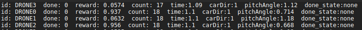
id：跟踪器的名称。
done：当前episode是否结束。
reward：当前step获取的reward大小。
count：当前episode运行的step步数。
time：仿真时间。
carDir：被跟踪目标运动方向。
pitchAngle：摄像头pitch轴角度。
done_state：产生done的原因，包括“height”（跟踪器高度不合理），“distance”（跟踪器目标位置和实际位置误差过大），“velocity”（跟踪器运动速度不合理），“yaw velocity”（跟踪器绕竖直方向旋转速度不合理），“pitch or yaw angle”（跟踪器姿态不合理）。
{kind=link}
跟踪器（仅无人机有效）产生done的物理范围参数配置
"Done_Range": {
"max_height": 50,
"min_height": 2,
"velocity": 100,
"omiga": 6.283,
"roll": 1.22,
"pitch": 1.22,
"distance_error": 50
}
参数说明
max_height：跟踪器最大飞行高度 (\(m\))。
min_height：跟踪器最小飞行高度 (\(m\))。
velocity：跟踪器最大飞行速度 (\(m/s\))。
omiga：跟踪器最大飞行角速度 (\(rad/s\))。
roll：跟踪器最大飞行roll角度 (\(rad\))。
pitch：跟踪器最大飞行pitch角度 (\(rad\))。
distance_error：跟踪器期望位置和当前位置的最大误差 (\(m\))。
内置reward的参数配置（注：内置reward仅对无人机有效，如使用CAR需利用 返回参数 自主设计reward）
"Reward_Config": {
"reward_type": "view",
"reward_mode": "continuous",
"reward_cut_off": 0.001,
"distance_scale": 0.01,
"distance_range": 7,
"view_scale": 4,
"view_range": 0.7
}
参数说明
reward_type：reward的类型（默认view）。view在图像平面进行reward构造，而distance是按照摄像头视角中点投影点到目标的距离进行检测。
reward_mode：默认reward的模式。continuous产生的是[0，1]之间的连续浮点数 ，而discrete产生的是0或1的整数。
reward_cut_off：奖励截断。当获得的奖励小于这个值时，No_Reward_Done_Steps开始计数。
distance_scale：距离比例（默认continuous）。该参数只对 distance 种类下的 continuous reward 有效，控制reward因距离误差而衰减的速度。
distance_range：产生reward的距离误差范围(仅对 distance 种类下的 continuous reward 有效)。
view_scale：视角比例。该参数只对continuous模式、view类型有效，控制reward距视角中心误差而衰减的速度。
具体参数含义见： 内置Reward
view_range：产生reward的视角范围。该参数用于缩放计算reward所用的四边形，也就是摄像头画面中四边形框的大小(见图 跟踪对象离散奖励示意图 中的红色矩形区域)。一般设置范围为[0,1]。
SUMO交通系统参数配置
"Sumo_Params": {
"rou_update": false,
"max_sumo_car": 40,
"fixed_car_group_num": true,
"car_group_num": 5,
"car_import_interval": 52.0,
"car_type": "passenger",
"fixed_color": false,
"normalize_color": [1,0,0],
"max_car_speed": 20,
"max_car_accel": 25,
"max_car_decel": 25,
"max_rou_distance": 7000,
"min_rou_distance": 500,
"route_num": 100000,
"fixed_seed": false,
"random_seed": 1
}
参数说明
rou_update：交通仿真路径文件是否更新，如果希望获得确定的路径，请设置为false。 注意： 该模块的所有参数改动都会导致路径自动刷新。
max_sumo_car：地图中最大载具数量。
fixed_car_group_num：是否自定义每组加入环境中车辆的数量。
car_group_num：自定义每组加入环境中车辆的数量。 注意： 在训练和视频模式下如果该参数设置不合理（＜Agent数量*3），系统会自动设置合理的参数（＝Agent数量*3），否则环境无法稳定运行, 并且仅当fixed_car_group_num为true时有效。
car_import_interval：加入地图每组载具的间隔时间 (\(s\))。
car_type：载具的类型（默认passenger），包括[“passenger”、“bus”、“truck”、“trailer”、“motorcycle”]。
所有支持的载具类型见： SUMO_VEHICLE
fixed_color：是否固定载具颜色。
normalize_color：归一化的RGB颜色向量。
max_car_speed：最大载具移动速度 (\(m/s\))。
max_car_accel：最大载具加速度 (\(m/s^2\))。
max_car_decel：最大载具减速度 (\(m/s^2\))。
max_rou_distance：最大路径长度 (\(m\))。
min_rou_distance：最小路径长度 (\(m\))。
route_num：路径最大数量（注意是最大，obj_edge_distribution_multilateral实际由于随机化的过程不一定完全成功，会比设置的参数要少）。
fixed_seed：是否使用固定的随机种子，如果希望获得稳定的路径和车辆样式，请设置为true。
random_seed：固定的随机种子。
其他对象追踪的参数配置
只有 Tracking_Object 为非“SUMO_VEHICLE”时生效。
"Other_Params": {
"max_obj_num": 10,
"obj_import_interval": 0.5,
"import_group_num": 4,
"obj_edge_distribution_random": false,
"obj_edge_distribution_multilateral": false,
"obj_edge_distribution_fixed": 0,
"obj_edge_distribution_max":10,
"obj_edge_distribution_min":-10
}
参数说明
max_obj_num：最大对象数量。
obj_import_interval：每组对象加入地图的时间间隔 (\(s\))。
import_group_num：每组加入对象的数量。
obj_edge_distribution_random：是否使能对象沿着地图道路两旁随机分布。true则会在随机路径随机位置的垂直方向随机放置。false则会在随机路径的随机位置垂直方向固定距离放置。
obj_edge_distribution_multilateral：是否使能双边分布。true则分布范围为[min, max] ∪ [-max, -min]。false则分布范围为[min, max]。
obj_edge_distribution_fixed：距离道路中心固定的距离 (\(m\))。
obj_edge_distribution_max：距离道路中心最大的距离 (\(m\))。
obj_edge_distribution_min：距离道路中心最小的距离 (\(m\))。
输出视频的参数配置
只有 Simulation_Mode 为“video”时生效。
"Out_Video": {
"channels": 4,
"fps": 50.0,
"start_time": 1.0,
"total_time": 50.0,
"warm_up_steps": 30,
"output_car_dir": false,
"random_action": true,
"forward_speed":40,
"backward_speed":-40,
"left_speed":40,
"right_speed":-40,
"cw_omega":2,
"ccw_omega":-2
}
参数说明
channels：视频通道数量，也就是导入地图中的跟踪器数量。
fps：根据仿真时间计算的每秒帧数（按照该帧数导出视频图像）。
start_time：视频开始导出的仿真时间 (\(s\))。
total_time：视频持续的仿真时间 (\(s\))。
warm_up_steps：reset后开始多少个step不输出数据。(注意，每个step的周期为 \(2ms\))。
output_car_dir：是否输出车辆方向，如果使能，则只输出车辆运动方向，否则，输出reward和action。（车辆方向：0停止，1直行，2左转，3右转）
random_action：跟踪器是否使用随机动作，如果使能，则根据Control_Frequence输出随机动作，否则，跟踪器将无差跟随车辆，此时输出action为-1（无意义）
forward_speed：跟踪器随机动作的前进速度 (\(m/s\))。
backward_speed：跟踪器随机动作的后退速度 (\(m/s\))。
left_speed：跟踪器随机动作的左移速度 (\(m/s\))。
right_speed：跟踪器随机动作的右移速度 (\(m/s\))。
cw_omega：跟踪器随机动作的顺时针旋转速度 (\(rad/s\))。
ccw_omega：跟踪器随机动作的逆时针旋转速度 (\(rad/s\))）。
跟踪器控制的参数配置
此组参数用于随机化跟踪器自身的跟踪属性。
"Drone_Random_Config": {
"start_time_bias_ms": 310,
"view_pitch_random": false,
"view_pitch_fixed": 1,
"view_pitch_random_max": 1.57,
"view_pitch_random_min": 0.7,
"height_random": true,
"height_fixed": 15.0,
"height_random_max": 25.0,
"height_random_min": 13.0,
"direction_random": false,
"direction_random_multilateral": false,
"direction_fixed": 0,
"direction_random_max": 0.1,
"direction_random_min": -0.1,
"horizon_bias_random": false,
"horizon_bias_multilateral": true,
"horizon_bias_fixed": 0,
"horizon_bias_random_max": 3,
"horizon_bias_random_min": 0.1,
"verticle_bias_random": false,
"verticle_bias_multilateral": true,
"verticle_bias_fixed": 0,
"verticle_bias_random_max": 3,
"verticle_bias_random_min": 0.1
}
参数说明
start_time_bias_ms：由于环境初始化需要时间，因此设置的智能体越多，初始化的时间会越长，该参数可以整体调整初始化时间的大小。
注意：总的初始化时间会根据智能体的数量的增加而增加，长于参数设置时间。
view_pitch_random：是否对跟踪器摄像头俯仰角随机化。
view_pitch_fixed：若上述参数为false，则采用该参数定义固定的俯仰角度。
若角度＞0则为俯角，反之为仰角。
在使用场景中，俯角是常态。因此仿真环境中该参数的范围限制在 \([0.5, 1.57](rad)\)
view_pitch_random_max：最大摄像头俯角。
view_pitch_random_min：最小摄像头俯角。
height_random：跟踪器飞行高度随机化。其余参数意义同上。
direction_random：初始视角跟踪器跟随对象方向随机化，范围 \([-\pi, \pi](rad)\)
direction_random_multilateral：是否启用双边随机化配置。
false, \([min, max]\) ;true, \([-max, -min] ∪ [min, max]\)
horizon_bias_random：初始视角跟踪器跟踪对象水平偏移位置。如果后续参数为正，则对象向左偏移，如果后续参数为负，则对象向右偏移。其余参数同上。
verticle_bias_random：初始视角跟踪器跟踪对象竖直偏移位置。如果后续参数为正，则对象向上偏移，如果后续参数为负，则对象向下偏移。其余参数同上。
仿真环境的参数配置
此组参数用于随机化跟踪器自身的跟踪属性。
"Env_Params": {
"background_luminosity_random": false,
"bgl_incremental": 0,
"bgl_random_max": 1,
"bgl_random_min": 0,
"backgroundLight_luminosity_random": false,
"bgLl_incremental": 0,
"bgLl_random_max": 1,
"bgLl_random_min": 0,
"foggy_use_default": true,
"foggy_visibility_range_random": false,
"foggy_visibility_range_fixed": 400,
"foggy_visibility_range_max": 1000,
"foggy_visibility_range_min": 300
}
参数说明
background_luminosity_random：是否对环境背景光照随机化。
bgl_incremental：若上述参数为false，则采用该参数定义固定的环境光照。
bgl_random_max：最大环境背景光照。
bgl_random_min：最小环境背景光照。
backgroundLight_luminosity_random：是否对环境背景光源光照随机化。
bgLl_incremental：若上述参数为false，则采用该参数定义固定的环境背景光源光照。
bgLl_random_max：最大环境背景光源光照。
bgLl_random_min：最小环境背景光源光照。
foggy_use_default：是否启用环境雾。
foggy_visibility_range_random：是否对环境雾可见度随机化。
foggy_visibility_range_fixed：若上述参数为false，则采用该参数定义固定的环境雾可见度。
foggy_visibility_range_max：最大环境雾可见度。
foggy_visibility_range_min：最小环境雾可见度。
部分配置参数建议
由于24张场景地图的复杂度/大小并不相同，因而本工程提供了每张地图的建议配置参数，请参考文档： 建议参数设置。
跟踪对象
本工程提供了18种共24个预定义的跟踪目标，并提供即插即用的接口，支持用户利用自主设计的模型和控制器。
SUMO_VEHICLE
SUMO_VEHICLE由SUMO交通管理系统控制地图中的交通状态，使载具在地图上按照规划的路径行驶。其中，载具的类型可以进行指定。
passenger
客运小型车辆，passenger类型中包含了常见的轿车、SUV、商务车，样式如下：
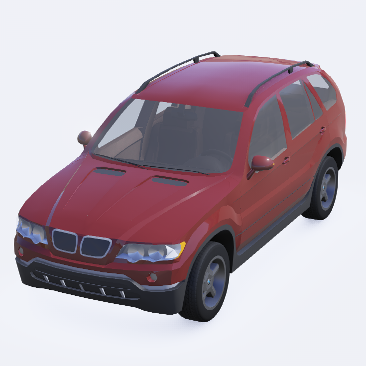 BmwX5 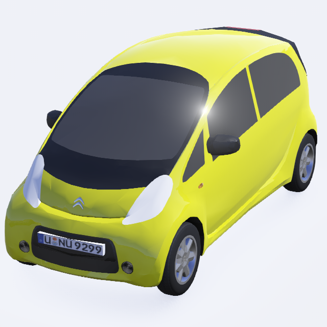 CitroenCZero 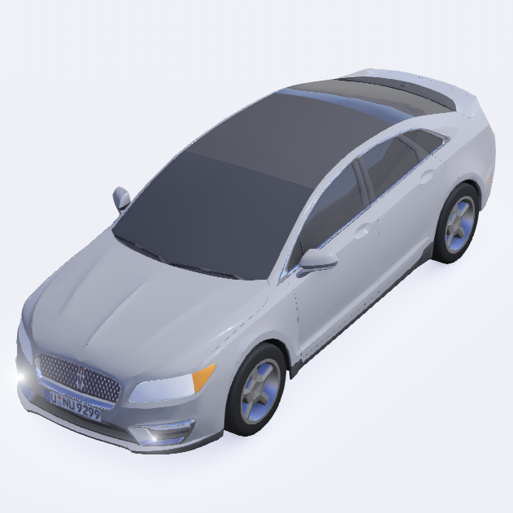 LinkolnMKZ 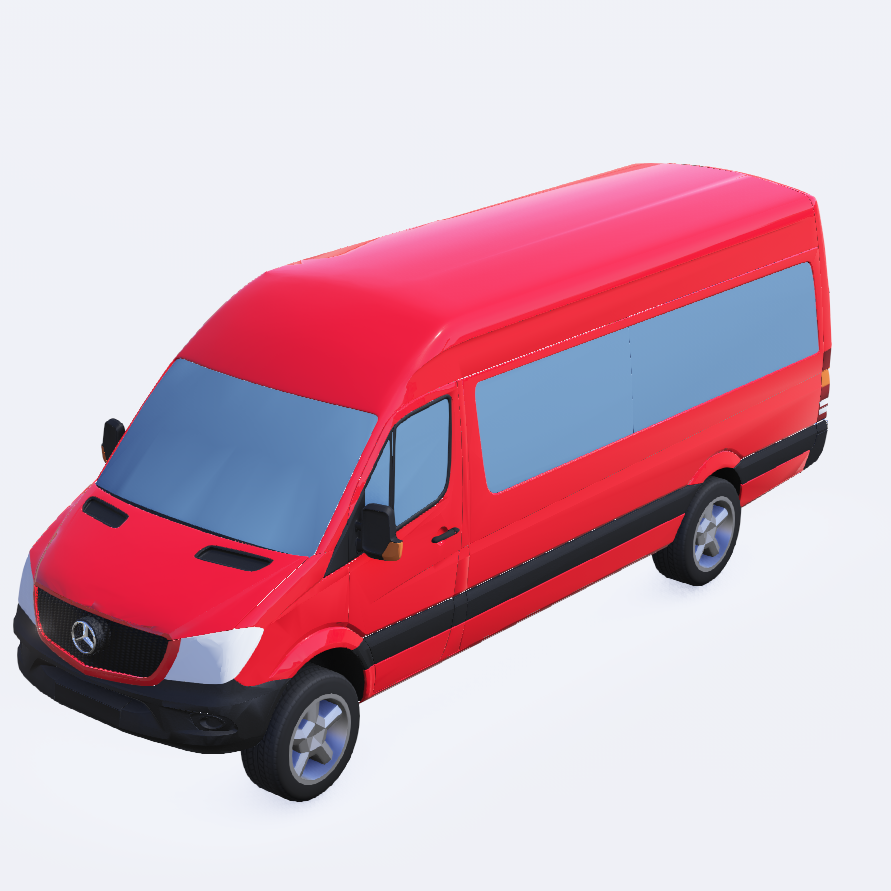 MercedesBenzSprinter 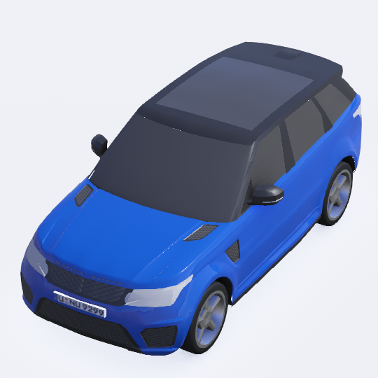 RangeRoverSportSVR 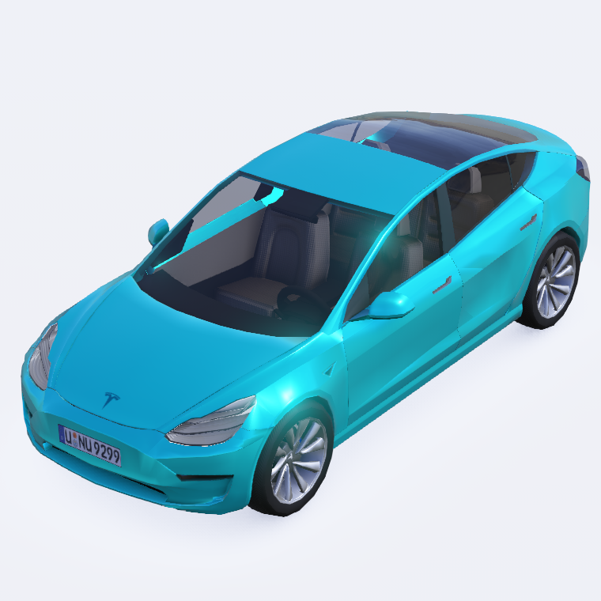 TeslaModel3 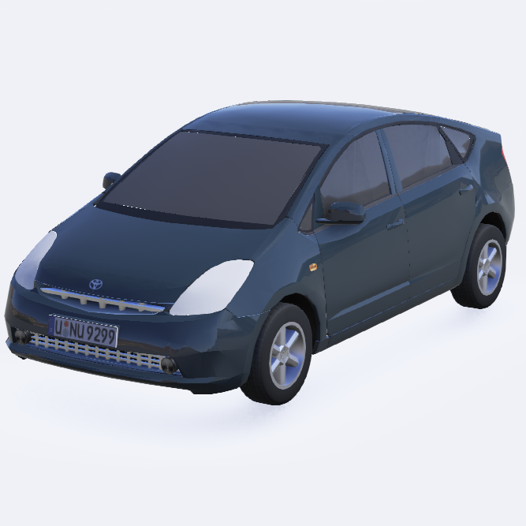 ToyotaPrius
bus
统一车型，大型载客车辆
{kind=link}
Bus
truck
统一车型，不带货箱的货车
{kind=link}
Truck
trailer
统一车型，带货箱的货车
{kind=link}
Trailer
motorcycle
两种车型，摩托车
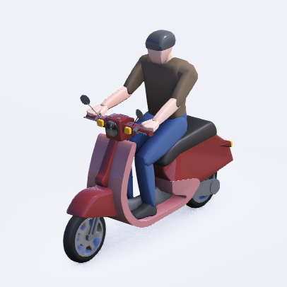 Scooter 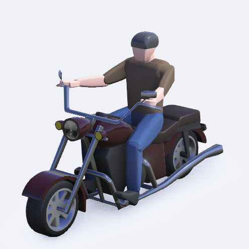 Motorbike
Pedestrian
行人对象会按照一定的路线和一定的速度行进，同时人体会模仿真人步态进行运动
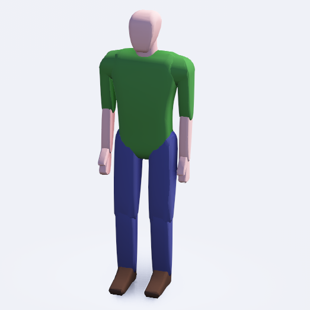 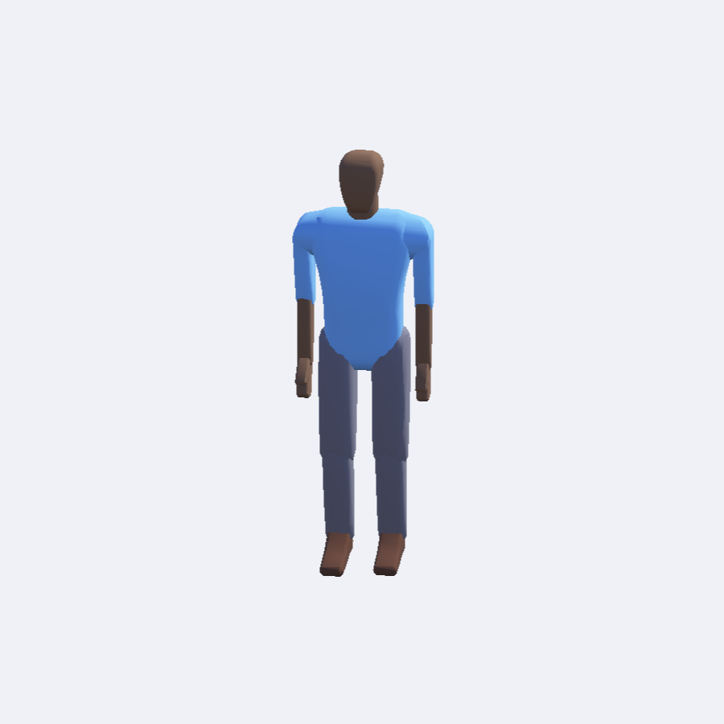 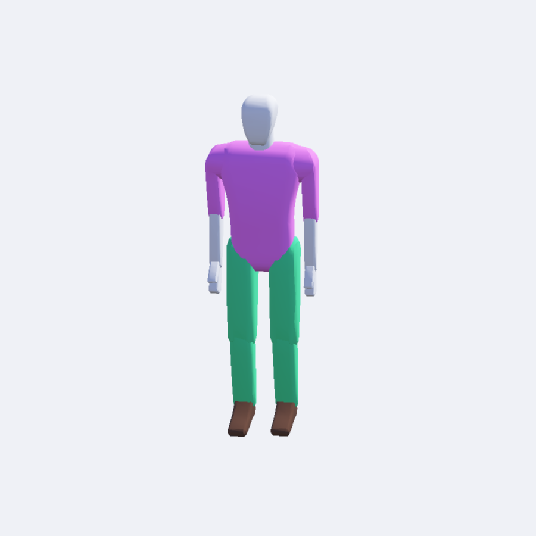 Pedestrian
Wheel Robots
轮式机器人
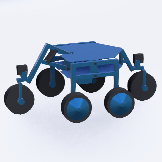 Shrimp 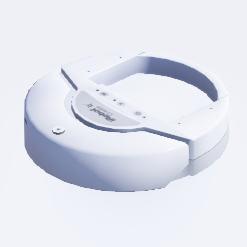 Create 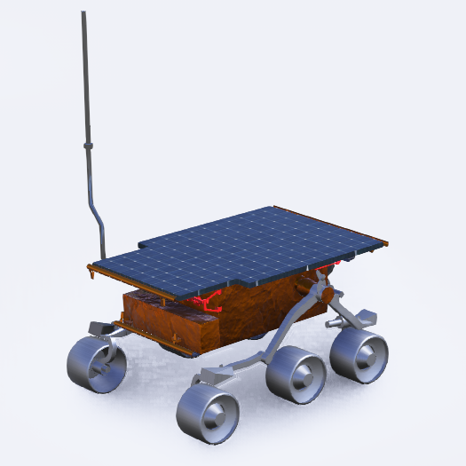 Sojourner 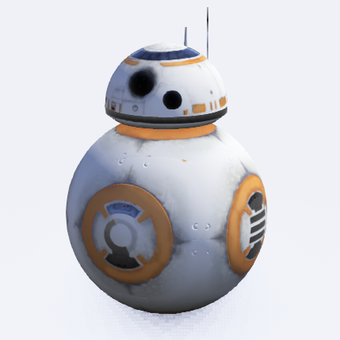 BB-8 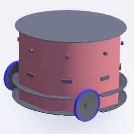 FireBird6
Legged Robots
足式机器人
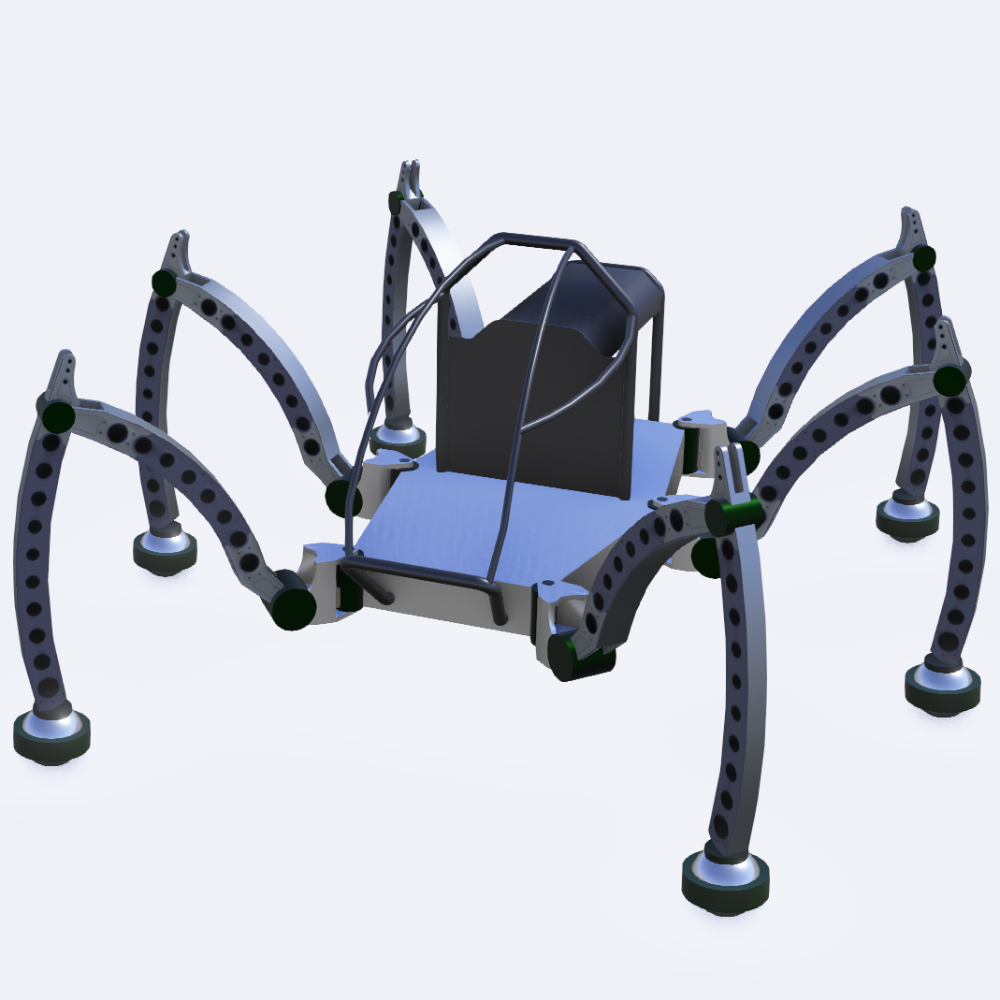 Mantis 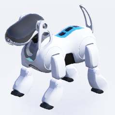 AiboErs7 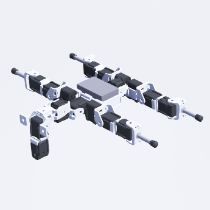 BioloidDog 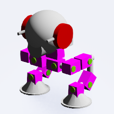 Scout 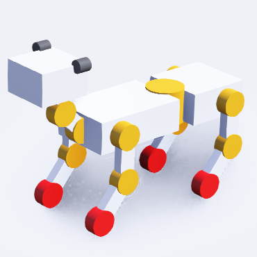 GhostDog 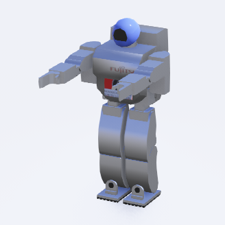 Hoap2
自定义对象
该工程支持自定义被跟踪对象，实现步骤如下：
按照 webots wiki标准 ，建立webots使用的描述文件proto文件，其中必须开放到场景树的属性包括”translation”，”rotation”，”name”。描述文件示例格式如下，存放在
UAV_Follow_Env/Webots_Simulation/traffic_project/protos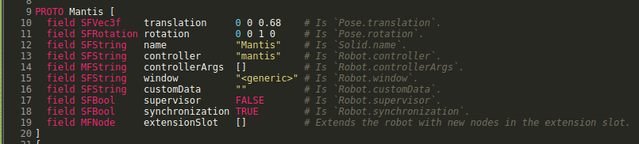 场景树属性包
可以选择编写控制器，让被跟踪对象有自主的行为
在webots的
IMPORTABLE EXTERNPROTO模块中载入已经建立的proto文件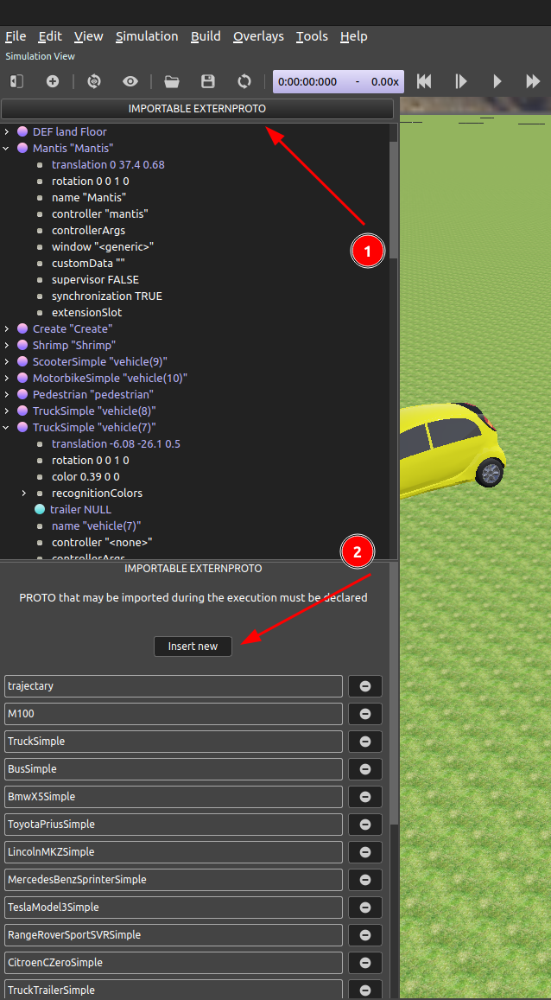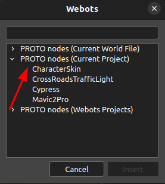IMPORT PROTO
{kind=link}
{kind=link}
内置Reward
本工程提供了离散型和连续型两种奖励函数，可用于设计不同的智能体评价指标。
奖励函数
由于Webots中超级智能体的存在，我们可以在每个时刻获取飞机以及被跟踪小车的坐标(x_f,y_f,z_f)以及(x_v,y_v,z_v)，并根据实际摄像头的Pitch角度以及设定的摄像头FOV直接判断出跟踪是否成功对于跟踪器（无人机），奖励函数有2种选择，第一种选择是离散奖励，当跟踪对象进入跟踪范围时给予奖励，离开范围时不给予奖励（奖励为0），数学表达式如下：
\[\begin{split}r_{d} = \begin{cases} 1 & t \in I, \\ 0 & \text{otherwise}. \end{cases}\end{split}\]其中 \(I\) 代表跟踪范围（相机镜头获取的画面范围）， \(t\) 代表跟踪对象在跟踪范围（相机镜头获取的画面范围）内的位置。
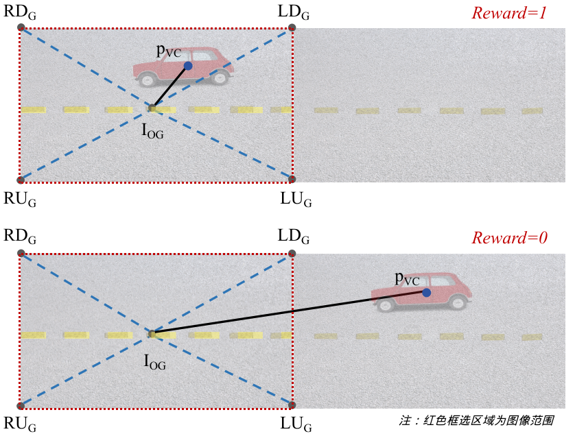 跟踪对象离散奖励示意图
第二种是连续奖励，通过判断跟踪对象相对跟踪范围中心的位置，给予一个随着距离增大而减小的奖励。奖励越高代表目标离范围中心点越近，反之越远。
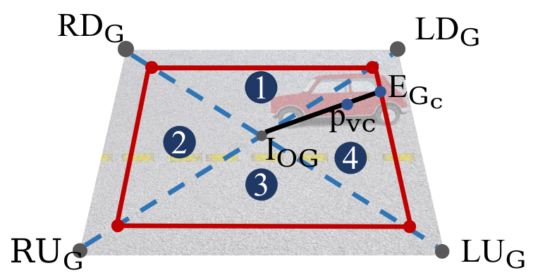 跟踪对象连续奖励示意图
上图是一个跟踪对象处于相机画面中的示意图，记
\[x = \frac{\mid p_{vc}- I_{OG}\mid}{\mid E_{G_c}- I_{OG}\mid}\]那么，密集奖励可以使用下面的表达式获得：
\[\begin{split}r_{c} = \begin{cases} \tanh\left(\alpha(1-x)^{3}\right), & t \in I_{clip}, \\ 0 & \text{otherwise}. \end{cases}\end{split}\]目标离范围中心点越近时，奖励会越接近1，反之越接近0。 \(\alpha\) 为常数，建议取值为3~5。 此外， \(I_{clip}\) 为有效reward判定范围(如 跟踪对象连续奖励示意图 中红色方框所示)，其边长 \(W_{I_{clip}}\) 与原图边长 \(W_{I}\) 的比值可以用 \(\lambda_{clip}\) 表示如下。
\[\lambda_{clip} = \frac{W_{I_{clip}}}{W}\]根据上述定义式， \(\lambda_{clip}\) 的合理范围为： \([0,1]\) ，在实际训练中，建议参数为 \(\lambda_{clip}=0.7\) 。
{kind=link}
{kind=link}
奖励获取
{kind=link}
原理
首先需要获取仿真中的相机焦距，利用小孔成像原理计算表达式如下：
\[f = \frac{W}{2\tan\left(\frac{1}{2}FoV\right)}\]其中 \(W\) 代表相机画面宽度（像素数）， \(FoV\) 指跟踪器相机视场角，如 奖励获取示意图 (a) 所示。
然后如 奖励获取示意图 (a) 所示，我们需要将相机画面角点投影到跟踪对象所处的空间平面上。接着如 奖励获取示意图 (b) 所示对跟踪对象坐标进行判断。最后在相机光心建立相机坐标系 \(\{c\}\)，就可以获得相机画面4个角点在坐标系 \(\{c\}\) 下的坐标：
\[\begin{split}LU\left(-f,-\frac{1}{2}W,\frac{1}{2}H\right),\\ LD\left(-f,-\frac{1}{2}W,-\frac{1}{2}H\right),\\ RU\left(-f,\frac{1}{2}W,\frac{1}{2}H\right),\\ RD\left(-f,\frac{1}{2}W,-\frac{1}{2}H\right)\end{split}\]再与光心 \(C\) \((0,0,0)\) 联立可得4个直线方程：
\[\begin{split}\begin{matrix} l_{LUC}: \frac{x}{-f} = \frac{2y}{-W} = \frac{2z}{H}, \\ l_{LDC}: \frac{x}{-f} = \frac{2y}{-W} = \frac{2z}{-H}, \\ l_{RUC}: \frac{x}{-f} = \frac{2y}{W} = \frac{2z}{H}, \\ l_{RDC}: \frac{x}{-f} = \frac{2y}{W} = \frac{2z}{-H} \end{matrix}\end{split}\]接着获取地面（水平）的方程为：
\[G_{w}: z = h\]\(\{w\}\) 代表世界坐标系， \(h\) 为地面高度。
由于跟踪器云台姿态已知，易得到相机坐标系 \(\{c\}\) 到世界坐标系 \(\{w\}\) 的齐次变换矩阵 \(T_{ct}\)。
利用 \(T_{ct}\) 可以将平面方程 \(G_{w}\) 转换到坐标系 \(\{c\}\) 下。如图A所示，联立地面方程与4个直线方程，即可求得相机角点在地面的映射坐标 \(LU_{G}, LD_{G}, RU_{G}, RD_{G}\)，该4个点组成了跟踪范围 \(I\) 的4个角点，从而确定跟踪区域 \(I\)。
最后从仿真环境中读取跟踪对象的坐标点 \(p_{vG}\) ，并将其与图像中心点
I_{OG}转换到坐标系 \(\{c\}\) 下，得到 \(p_{vc}\)。利用汽车的坐标 \(p_{vc}\)，四个交叉点（LU_G、LD_G、RU_G和RD_G）和图像中心I_{OG}， 利用 跟踪对象连续奖励示意图 ,即可求得比例 \(x\)，当 \(0 \leq x \leq 1\) 时对象在图像内，成功跟踪。当地面非水平时计算方法类似。
投影可视化
按照上述原理实现之后相机角点到地面的映射效果如下视频所示，在仿真中将方块放置到地面与直线计算出来的交点处，即可实时观察相机画面的范围：
注意：视场角上限不能超过地平线，否则计算结果没有意义。
定制化参数接口
输入动作
输入动作用于控制跟踪器的运动，目前跟踪器支持离散及连续的动作空间。连续的动作空间为5个浮点数，包括前进/后退、左移/右移、上移/下移、顺/逆时针旋转及是否reset。离散的动作空间包含前进、后退、左平移、右平移、逆时针旋转、顺时针旋转和停止。
返回参数
返回参数主要包括三个部分，基础数据包，自定义奖励数据包，雷达数据包
基础数据包
基础数据包共22个浮点数，如下所示：
typedef struct _Odometry{ double t;// 仿真步数（不是仿真时间） vector3 position;//三轴位置m vector3 linear;//三轴线速度m/s vector3 acc;//三轴加速度m/s^2 vector3 angular;//三轴角速度rad vector4 orientation;//四元数 vector3 angle;//欧拉角 double reward;//reward double done;//是否结束仿真 }Odometry;
| 类别 | 传感器 | 参数 | 类型 | 描述 | 潜在任务 |
|---|---|---|---|---|---|
| Vision | Camera | Image | Mat | Images captured by the camera | Default sensor |
| Lidar | LidarCloud | vector2000 | Point cloud from RpLidarA2(m) | Obstacle avoidance | |
| Motion | GPS | Position | vector3 | Position (m) | Visual navigation |
| Linear | vector3 | Linear velocity (m/s) | Visual navigation | ||
| Accelerometer | Acc | vector3 | Acceleration (m/s^2) | Visual navigation | |
| Gyroscope | Angular | vector3 | Angular velocity (rad/s) | Robot posture stabilization | |
| IMU | Angle | vector3 | Eular angles (rad) | Robot posture stabilization | |
| Orientation | vector4 | Quaternion representation | Robot posture stabilization |
自定义奖励数据包
自定义奖励数据包共60个浮点数+1个字符串，具体内容如下：
typedef struct _rewardData{ double cameraWidth;// 图像宽度（像素） double cameraHeight;// 图像高度（像素） double cameraFov;// 摄像头视场角（rad）[0,pi] double cameraF;// 摄像头焦距估算（像素） double cameraPitch;// 摄像头俯仰角 (rad) double trackerHeight;// 跟踪器高度 (m) double initDirection;// 初始跟踪角度 (rad) double T_ct[16];// 摄像头相对于世界坐标系的齐次变换矩阵 double T_tw[16];// 车辆相对于世界坐标系的齐次变换矩阵 vector3 cameraMidGlobalPos;// 摄像头中心映射到地面在世界坐标系下的三维坐标 vector3 carMidGlobalPos;// 车辆中心在世界坐标系下的三维坐标 vector3 cameraMidPos; // 摄像头中心在世界坐标系下的坐标 vector4 carDronePosOri; // 车辆中心在跟踪器坐标系下的1D姿态+3D坐标 [w, x, y, z] vector3 carDroneVel; // 车辆中心在无人机坐标系下的3D速度 vector3 carDroneAcc; // 车辆中心在无人机坐标系下的3D加速度 double crash; // 跟踪器是否与建筑物碰撞 double carDir;// 车辆运行方向(0停止，1直行，2左转，3右转) std::string carTypename;// 对象类型 }rewardData;
其中，参数
carCameraPosOri中跟踪器坐标系定义和姿态角定义如下：
无人机坐标系定义
雷达数据包
雷达点云数据。该环境中的跟踪器搭载了RpLidarA2单线雷达，其点云数据将输出一个长度为2000的数组。